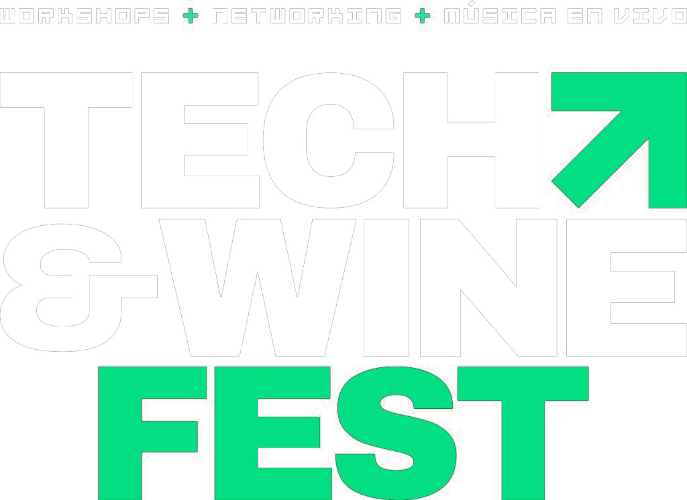
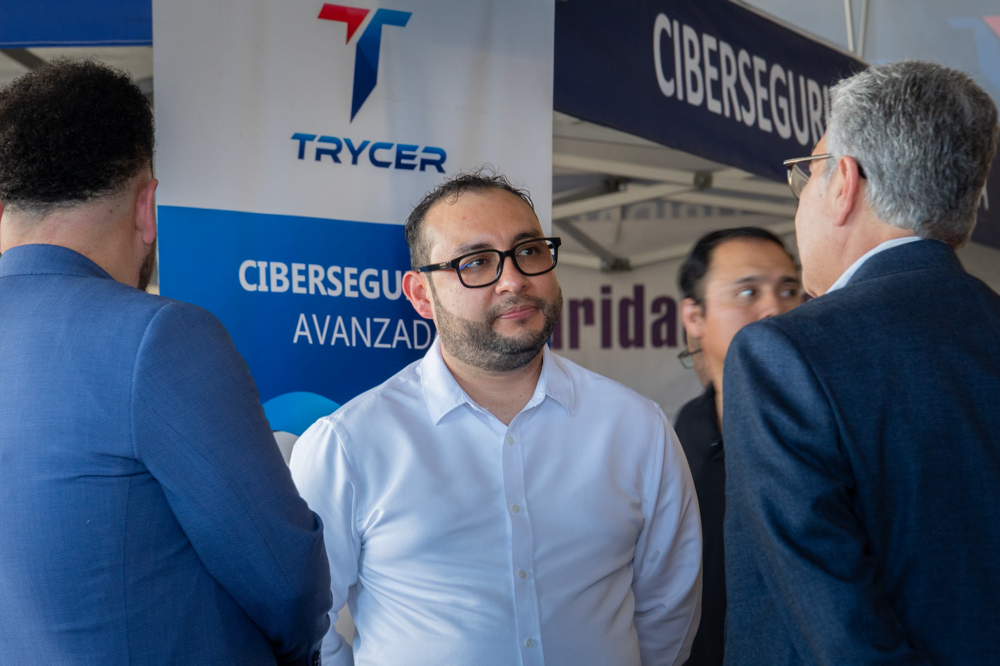
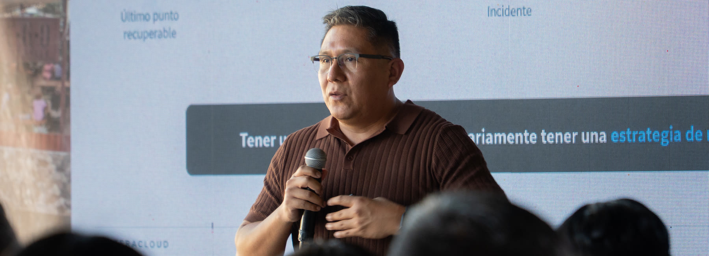
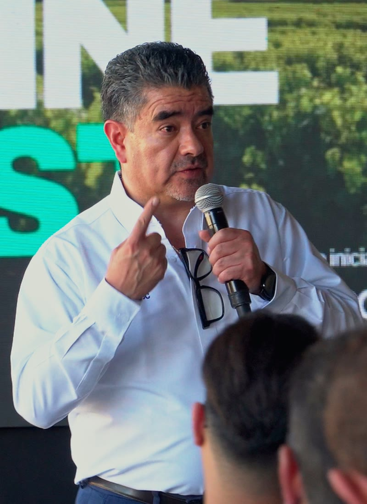
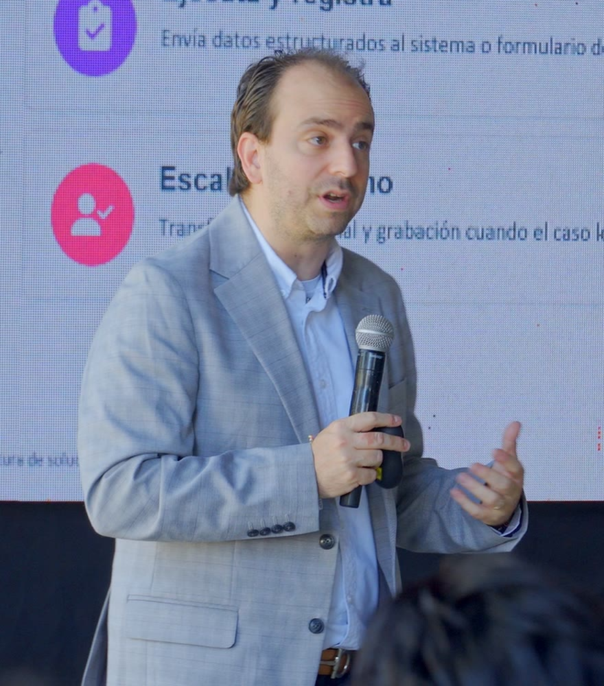
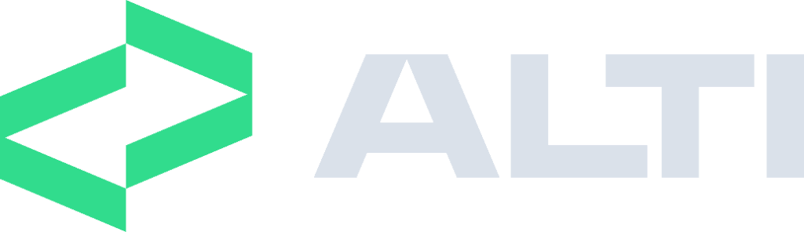
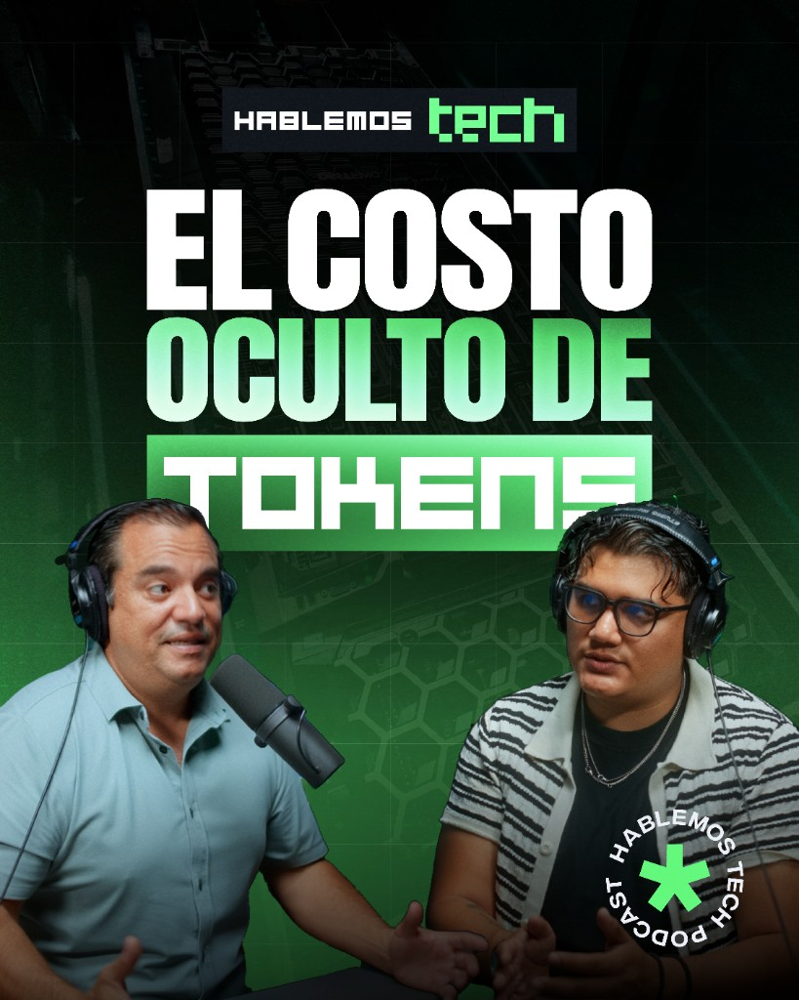
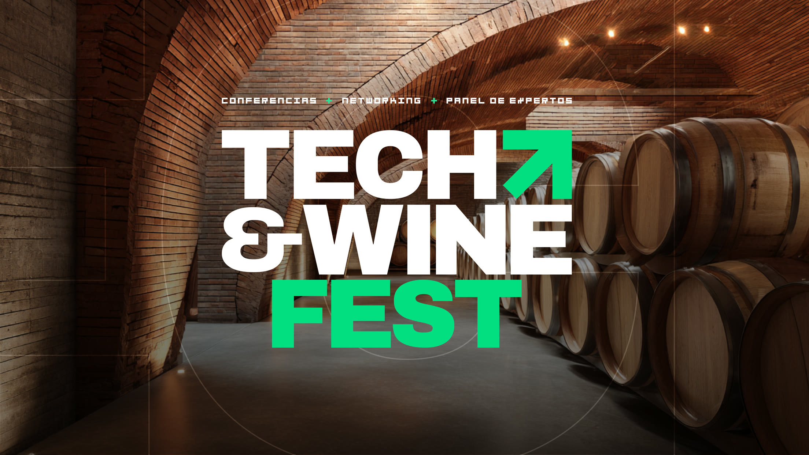

Tech & Wine Fest 2026

Sumario.
-
03
Crónica · Josué Madera
De la taquiza al valle
-
04
Ciberseguridad · Gustavo Rodríguez
El código que no escribiste
-
08
IA en producción · Andrés Wong
Lo que cuesta un token
-
10
Nube · Francisco Olazo
Respaldar no es recuperar
-
11
Experiencia de cliente · Raúl Reséndiz
Tecnología que no estorba
-
12
Conversación · Victor Mendivil
TI es el negocio
-
14
Agentes virtuales · David Modiano
La receta de un agente
-
15
Impresión · Josué Israel Gutiérrez
La impresora es un endpoint
-
16
Cierre
Ocho ideas para el lunes
-
18
Podcast · Nuevo episodio
El costo oculto de tokens
Carta editorial
De la taquiza al valle.

La segunda edición del Tech & Wine Fest juntó en Valle de Guadalupe a líderes de TI de Tijuana, Mexicali y el resto de la región. Siete sesiones y una misma advertencia: confiar sin verificar ya no alcanza.
Todo empezó con quince o veinte personas, una taquiza y unas cervezas. Así lo contó Josué “Josh” Madera —director de Enteracloud, cofundador de Purple AI y director del comité de tecnología de Index Zona Costa— al abrir la tarde.
A esa primera red le siguieron reuniones de directores, encuentros con agentes aduanales y el Foro de Tecnología MX, que en Tijuana reunió a cerca de 400 líderes.
El año pasado llovió; esta vez se adelantaron al frío y les tocó el calor. Hubo vino, mezcal de Oaxaca, banda en vivo y mucha conversación sobre ataques que llegan por terceros, IA que cuesta más de lo presupuestado y respaldos que nadie ha probado.
- Tijuana Tech Network15 a 20 líderes
- Director Business NetworkDirectores
- Aduanas InteligentesAgentes aduanales
- Foro de Tecnología MX≈ 400 líderes
- Tech & Wine Fest2ª edición
No te van a atacar a ti.
Van a atacar a alguien de quien dependes.
Gustavo RodríguezDirector de ciberseguridad · Grupo Trycer

CiberseguridadEl código que no escribiste.
Gustavo Rodríguez, director de ciberseguridad de Grupo Trycer, subió al escenario con un casco de Iron Man y una frase de Ken Thompson, de 1984: no puedes confiar en código que no escribiste tú mismo.
La plática · La falla estaba en la armadura. Supply chain: el enemigo que tú mismo instalaste
Hoy ese código llega en una dependencia o lo sugiere una IA. NPM y PIP son la tienda de apps de los programadores: alguien publicó el paquete, tú lo instalas, casi siempre como administrador, y confías en que haga lo que dice.
Si una IA recomienda una librería que no existe, alguien puede publicarla con código malicioso. En 2021, Alex Birsan subió paquetes con el nombre de dependencias internas de empresas como Apple y Microsoft, y los gestores instalaron la versión pública.
Kaseya y Shai-Hulud siguieron el mismo patrón, según Gustavo: dependencias que nadie verificó.
No todo lo que pide rescate es ransomware. NotPetya cifraba el MBR y el MFT sin forma de recuperarlos: era un wiper. Y el ransomware es toda una industria, con brokers de acceso, afiliados, negociadores y hasta call centers.
“Nadie lo va a detectar, porque viene del código.”
Gustavo Rodríguez · Sobre firewalls y antivirus
Por dónde empezar
- Revisa cada paquete que te sugiera una IA antes de instalarlo.
- Da a cada proveedor una VPN limitada y ventanas de mantenimiento.
- Activa MFA en cada servicio y cada cuenta de administrador.
- Descarga los 18 CIS Controls v8: son gratis.
Cuatro puertas de entrada.
Por dónde se mete un ataque a la cadena de suministro, según Gustavo Rodríguez.
- 01Dependencia
Código que bajas de NPM, PIP o RubyGems y que casi siempre instalas como administrador.
- 02Pipeline
Acciones y plugins sin definir, y aplicaciones que corren sin permisos específicos.
- 03Artefacto
Siempre compila limpio: el problema viene de antes, desde el desarrollo.
- 04Identidad
Tokens sin límite, credenciales sin MFA y cuentas que son administradoras.
- 454 mil
- paquetes maliciosos nuevos al año Sonatype
- 65%
- ve la cadena de suministro como su mayor reto Foro Económico Mundial
- +250
- días en promedio para detectar una brecha Citado por Gustavo Rodríguez
De un día y medio a
13seg.
Procesar un M3 de más de 100 partidas le tomaba un día y medio a una agencia aduanal. Andrés Wong, de Purple AI, contó cómo lo bajaron.
- Manual1.5 días
- Ronda 1 · agentes LLM1.5 h
- Ronda 2 · mejor algoritmo13 min
- Rediseño · el LLM decide, el código ejecuta13 s
- 32
- archivos en paralelo
- 24/7
- sin turnos ni pausas
- 0
- reemplazos: el equipo ahora valida
Dir. de Inteligencia Artificial, Purple AI
Lo que de verdad cuesta un token.
Casi nadie sabe cuánto le costará la IA hasta ver la factura.
Un token es un pedazo de palabra, y es lo que cobran los proveedores de IA. En inglés se gasta uno por palabra; en español, dos.
Un chatbot te dice qué hacer; un agente lo hace, falla y reintenta. Con tokens de sobra, ese loop es poderoso; medido, es un problema.
Su salida: formato estricto (JSON, XML, Markdown), menos “pensamiento” y código para lo que no requiere criterio.
“Si no sabemos cuánto nos cuesta técnicamente y económicamente, es una demostración, no es producción.”
Andrés Wong · Dir. de Inteligencia Artificial, Purple AI

Nube e infraestructuraRespaldar no es recuperar.
Francisco Olazo, LATAM Lead Engineer en Enteracloud, recuerda a un cliente que llamó en febrero a las seis de la mañana: tenía respaldos de hacía meses y ningún servidor donde restaurarlos.
Su operación estaba detenida. La falla es técnica; el impacto, de negocio: usuarios que no facturan, órdenes que no salen, mercancía detenida en el cruce. Pocos saben cuánto tardarían en volver a operar.
- 01Operar
Alta disponibilidad, alertas y visibilidad. Si no podemos verlo, difícilmente podemos administrarlo.
- 02Recuperar
Restaurar de prueba cada mes o cada dos meses. Es la única forma de saber que el respaldo sirve.
- 03Escalar
Crecer on-premise toma de tres a cinco semanas. En la nube, el recurso llega con el proyecto.
Tecnología que no estorba.
Para Raúl Reséndiz, CEO de Grupo Scentec, la IA llegó a romper silos entre CRM, ERP y canales, no a sumar consolas.

CEO, Grupo Scentec
- Reporta la tarjeta
- “Eso es otro proceso”
- Transferencia
- Otro menú
- Repite sus datos
- Lo pide una vez
- Especialista correcto, con contexto
- 01Con límites
Modelo cerrado a datos propios; un RAG fija qué puede decir.
- 02Con humano
Transferir está en el diseño: el ejecutivo recibe el contexto.
- 03Omnicanal
WhatsApp hoy, Messenger mañana: la experiencia no cambia.
“La experiencia como usuario debe ser única, transparente, eficiente y expedita.”
Raúl Reséndiz · CEO de Grupo Scentec
“TI no es parte del negocio. TI es el negocio.”
Una lección que Victor atribuye a un mentor, y que repitió frente al público del valle.
- Victor Mendivil
- Director de IT & Data para Norteamérica, Ontex
- Consejero de ALTI · Ex CIO de Ópticas Devlyn
- En conversación con Mónica Pelayo, Mopec Security
Socios, no proveedores.
En diálogo con Mónica Pelayo, de Mopec Security, Victor Mendivil habló de cimientos, video con IA y por qué se diseña a cinco años.
¿Qué buscas hoy en un socio de tecnología?
Ya no buscamos proveedores; eso era el pasado. El producto hasta lo puedo comprar en Amazon. Necesitamos a alguien experto que nos acompañe desde el diseño.
¿Qué tan importante es la infraestructura?
Es el cimiento del edificio. Puedes comprar la mejor cámara del mundo, pero si no tienes buen cableado ni un buen enlace a la nube, no le sacas provecho.
¿Sirve a otras áreas, además de seguridad?
En Best Buy, en 2008, ya usábamos cámaras para contar cuánta gente entraba y cuánta compraba. Con ellas también se hacen mapas de calor para medir las cabeceras de oferta.
Preguntas de Mónica Pelayo, editadas por claridad
Agentes virtuales
La receta de un agente.
Diseñar un agente virtual es como contratar a alguien. David Modiano, de Net2Phone, propuso un marco para armarlo en menos de 20 minutos.

Director, Net2Phone
- RRolQuién es y para quién trabaja.
- EEntornoHorarios, catálogo, SKU y políticas.
- CCapacidadesCuatro tareas como máximo, para que no divague.
- EEscalamientoCuándo deja de intentar y pasa a un humano.
- TTonoIdiomas, trato y largo de las respuestas.
- AAnclaLos límites para que no alucine.
Sr. Solutions Technical Support, Canon Mexicana
La impresora es un endpoint.
Muchos ataques llegan por un tercero, y la impresora también es uno. Lo planteó Josué Israel Gutiérrez, de Canon Mexicana.
240
empresas expuestas al fallar la nube de impresión de un competidor; 60% eran escuelas y hospitales.Caso citado por Josué Israel Gutiérrez
Una impresora comprometida puede detener la operación o imprimir los mensajes del atacante. Su propuesta: arranque seguro, información cifrada e IA que vigila la red.
Pregúntale a tu proveedor de impresión
- ¿Qué hace el equipo si alguien altera su arranque?
- ¿Lo que se imprime queda cifrado?
- ¿Puedo saber quién imprime, qué y cuándo?
- ¿Cómo reaccionan si los hackean a ellos?
Ocho ideas para el lunes.
- 01
Mapea de quién dependes: cada librería es una puerta.
Gustavo Rodríguez - 02
Mide los tokens antes de prometer ahorros.
Andrés Wong - 03
Restaura un respaldo este mes; no solo lo guardes.
Francisco Olazo - 04
Diseña la salida al humano, con contexto.
Raúl Reséndiz - 05
Busca socios, no proveedores, y diseña a cinco años.
Victor Mendivil - 06
Dale a tu agente una receta y un ancla.
David Modiano - 07
Trata a tu impresora como cualquier endpoint.
Josué Israel Gutiérrez - 08
Sal de la oficina: el ecosistema se hace en persona.
Josué Madera
Ecosistema
Una mesa cada vez más grande.

La Alianza de Líderes de Tecnología e Innovación es un espacio para CIO, CTO y líderes de TI. Hoy organiza talleres y desayunos en Tijuana; Mexicali y Ensenada vienen después.
Participaron
- Enteracloud
- Purple AI
- Index Zona Costa
- ALTI
- Grupo Scentec
- Grupo Trycer
- Mopec Security
- Canon Mexicana
- Nepsis Digital
- Net2Phone

Nuevo episodioEl costo oculto de tokens de IA.
Procesar un archivo con IA le costó a un cliente 1,300 pesos. Con treinta, la cuenta llegó a 11,500, y al final decidió seguir pagándole a su equipo.
$1,300Un archivo
$11,500Treinta archivos
En este episodio
- Por qué en español la IA sale más cara.
- Cómo un “hola” puede costar lo mismo que procesar un PDF.
- Por qué el mismo archivo a veces cuesta un dólar y a veces treinta.
- Lo que de verdad implica montar tu propia IA local.
La IA sí puede automatizar casi todo. La pregunta es cuánto te va a costar. Para leer más: Lo que de verdad cuesta un token, p. 9.
Escanea o da clicMíralo en YouTubeyoutube.com/@hablemostechpodcast
19
Scroll para acercar · con el click sostenido mueves la página Desliza la página para avanzar